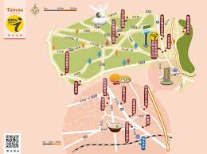
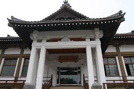

南投之美
關於南投
南投介紹

南投縣（閩南語：Lâm-tâu Kuān，國姓鄉四縣客語：Namˇ Teuˇ Ien），是中華民國臺灣省的縣份，位 處臺灣中部，坐落在本島正中央，是臺灣唯一的內陸縣。縣治南投市內的中興新村是臺灣省政府所在地。 縣境內原住民有泰雅族、賽德克族、布農族、鄒族及居住在日月潭畔之邵族。臺灣最高峰玉山、最大天然湖 泊日月潭、最長河流濁水溪的源頭與臺灣地理中心皆位於本縣，而鄰近彰化與台中一帶因人口聚集，形成中部 衛星都市的分布型態。特產包括青梅、香蕉、甘蔗、凍頂烏龍茶、紹興酒、竹藝品、南投陶、花卉。;各項祭典 以木刻的方式記載，成為布農族相當獨特的版歷。為配合祭禮的進行，布農族人在音樂上也發展出相當複雜 的合音唱法，就是舉世聞名的「八部合音」。此外尚有七弦杉木琴、口簧琴、弓琴即由搗米所發展出來的「巨木杵樂」。
南投地名由來，源自平埔族洪雅族支族阿立昆族（Arikun）族語「Ramtau」，即以臺語音譯為「南投」[2]。 古志日:「虎尾之北有大武郡山，東為南投山，內社二，溪南為南投，溪北為北投，故名「南投」。 南投在明鄭時期屬天興縣（註：今臺南市以北均屬之），後屬北路安撫司。1683年（清康熙二十二年） 隸屬於福建省臺灣府諸羅縣。1723年（雍正元年）增設彰化縣，本縣隸屬之。至1759年（乾隆二十四年） 正式設縣丞，此為南投縣有政教之始。1887年（光緒十三年）福建、臺灣分治，臺灣改制為臺灣省，這時 的南投行政區屬臺灣府台灣縣（縣治在今台中市南區），縣丞駐南投堡。同時雲林縣衙設在竹山，管轄雲林縣。
南投歷史
 1894年（光緒二十年）甲午戰爭清廷戰敗，遂於第二年（1895年）將台、澎割讓日本。1895年劃入臺中縣，1901年獨立 為南投廳，1920年改為臺中州南投郡、竹山郡、新高郡、能高郡。 1945年日本戰敗，戰後初期本縣仍屬台中縣轄。1950年10月，臺灣 地區實施地方自治，政府調整全省行政區，南投自臺中縣劃出單獨設 南投縣，並於是年10月21日設立南投縣政府，此為南投縣之誕生。縣治設 於南投鎮（今南投市）。1957年7月1日，臺灣省政府遷至南投縣南投市營 盤口設置中興新村，使南投成為臺灣省省會所在地。
南投社會與經濟
生活圈分區
南投區：位於南投縣西北，包含南投市、草屯鎮、名間鄉、中寮鄉，以南投市、 草屯鎮兩地為主要市鎮，彰化縣芬園鄉的人文經濟活動與本區也相當密切；分區人口數共有約25.2萬多人。
埔里區：位於南投縣東北，包含埔里鎮、國姓鄉、魚池鄉、仁愛鄉，以埔里鎮 為核心市鎮，埔里鎮亦為通往日月潭、清境農場等旅遊景點之重要樞紐，921大地震後，由於中橫公路主線 毀損，梨山地區與本生活圈有更多來往；分區人口數共有約13.1萬多人。
水里區：位於南投縣東南，包含水里鄉、集集鎮、信義鄉，以水里鄉為主要市鎮，本生活圈也包含鹿谷鄉 清水溝地區；分區人口數共有約4.5萬多人。
竹山區：位於南投縣西南，包含竹山鎮、鹿谷鄉，以竹山鎮為其主要市鎮，竹山鎮亦為通往太極峽谷、溪頭 、杉林溪必經之地，本區與雲林縣斗六市互動亦多，且竹山原轄雲林縣且境內之雲林坪為雲林縣名來源； 分區人口數共有約7.3萬多人。